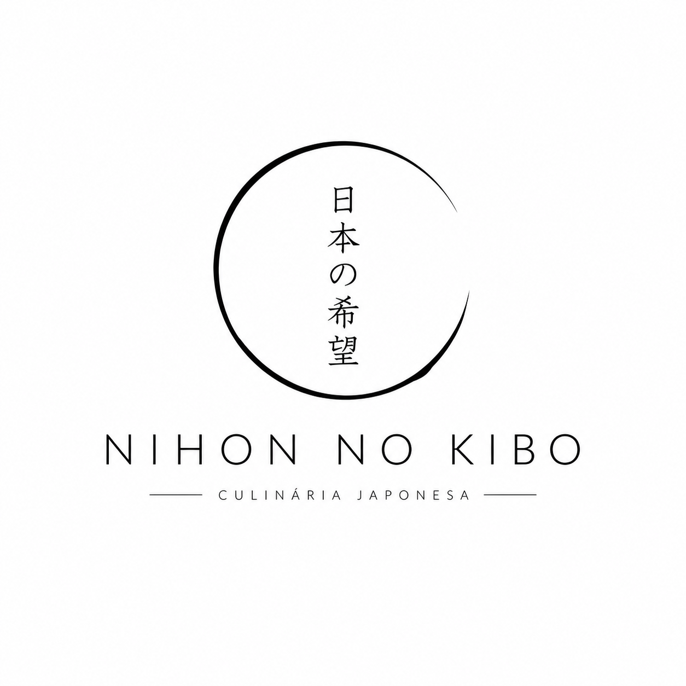

Omakase intimista
Sequência guiada pelo chef com cortes frescos, arroz temperado no ponto e finalizações sob medida.

Nihon no kibo Restaurante japonêsCulinária japonesa autoral em São Paulo
Um restaurante japonês de atmosfera minimalista, sabores precisos e detalhes orientais pensados para transformar cada encontro em um ritual.
Experiência
Sequência guiada pelo chef com cortes frescos, arroz temperado no ponto e finalizações sob medida.
Contraste elegante, madeira escura, lanternas discretas e composição inspirada nos interiores japoneses.
Peixes, algas, cogumelos e caldos preparados diariamente para preservar textura, aroma e equilíbrio.
Explore
Conheça os pratos, a história do restaurante, a proposta visual e o formulário de contato criado para reservas e mensagens.